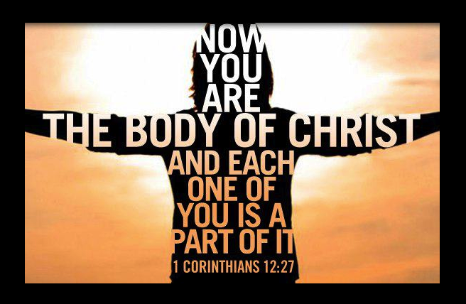

Memory Verse
Ephesians 4:3 (NIV): "Make every effort to keep the unity of the Spirit through the bond of peace."
Introduction
The Church is called to be one body, united in love and mission. Jesus prayed for the unity of His followers because He understood the power that comes when believers stand together in faith. In this lesson, we will explore the power of church unity through six biblical examples, each with a lesson for today’s Church.
1. The Early Church in Acts (Acts 2:42-47)
The believers in the early Church lived in unity, sharing all things in common and devoting themselves to the apostles' teaching. Here’s how their unity manifested:
- Shared Resources: They sold their possessions and shared with those in need (Acts 2:45).
- Worship and Fellowship: They met regularly in the temple courts and broke bread in their homes (Acts 2:46).
- Spiritual Growth: Their commitment to teaching, fellowship, and prayer led to their spiritual growth (Acts 2:42).
- Evangelism: Their unity attracted others, and the Lord added to their numbers daily (Acts 2:47).
Lesson: Unity strengthens the Church community and enhances its ability to care for one another, grow spiritually, and evangelize effectively.
2. The Tower of Babel (Genesis 11:1-9)
At Babel, people united in a common goal to build a tower to reach the heavens. Though their unity was strong, it was directed toward a self-centered purpose. Key points:
- One Language: The entire world had one language, enabling them to communicate and work together (Genesis 11:1).
- Ambition: Their aim was to make a name for themselves, rather than glorifying God (Genesis 11:4).
- God's Intervention: God confused their language, causing them to be scattered (Genesis 11:7-8).
Lesson: Unity is powerful, but it must be aligned with God’s will. When people come together for selfish purposes, their efforts may be disrupted by God.
3. Nehemiah Rebuilding the Wall (Nehemiah 4:6)
When Nehemiah returned to Jerusalem to rebuild the city's walls, he faced opposition. However, the people worked together with a mind to work, and their unity brought success. Key points:
- Opposition: Nehemiah faced external enemies who mocked and threatened them (Nehemiah 4:1-3).
- Prayer and Action: Nehemiah prayed for guidance, but the people also worked diligently (Nehemiah 4:9).
- Focus: Despite the threats, the people kept their focus on the task at hand (Nehemiah 4:17).
- Completion: Their unity enabled them to finish rebuilding the wall in just 52 days (Nehemiah 6:15).
Lesson: Unity in the face of opposition leads to the successful completion of God’s work. The Church should stand together, pray, and act to accomplish its mission.
4. Jesus Praying for Unity (John 17:20-23)
In His final prayer before the crucifixion, Jesus prayed for all believers to be united, just as He and the Father are united. Here’s what we can learn:
- Unity Among Believers: Jesus prayed that all believers would be one (John 17:21).
- Reflection of God’s Love: This unity reflects God’s love to the world (John 17:23).
- Testimony to the World: When the Church is united, it demonstrates that Jesus was sent by God (John 17:21).
Lesson: Unity within the Church is a powerful testimony to the world, reflecting God’s love and the truth of the gospel.
5. Paul’s Teaching on One Body (1 Corinthians 12:12-27)
Paul compares the Church to a body with many parts, each with its own function. Every member is important and contributes to the whole. Consider these points:
- Diversity of Gifts: Each member has unique spiritual gifts that contribute to the Church (1 Corinthians 12:4-7).
- Interdependence: No part of the body can function properly without the others (1 Corinthians 12:21).
- Value of Every Member: Even the "weaker" parts are indispensable (1 Corinthians 12:22).
Lesson: Unity doesn’t mean uniformity. The Church thrives when each member uses their gifts in harmony with others, recognizing their value in God’s plan.
6. The Day of Pentecost (Acts 2:1-4)
On the Day of Pentecost, the believers were united in one place, praying and waiting on the promise of the Holy Spirit. Their unity led to a powerful outpouring of the Spirit. Key points:
- Gathered Together: The believers were gathered in one place, united in prayer (Acts 2:1).
- The Holy Spirit’s Arrival: The Holy Spirit came upon them with a mighty rushing wind and tongues of fire (Acts 2:2-3).
- Empowerment: They spoke in different tongues as the Spirit enabled them (Acts 2:4).
- Impact: This event led to the conversion of about 3,000 people (Acts 2:41).
Lesson: Unity among believers invites the Holy Spirit’s power, leading to transformation and effective witness to the world.
Conclusion
The power of Church unity is evident throughout the Bible. When believers come together in unity, they strengthen their community, overcome opposition, and effectively fulfill their mission. Let us strive to maintain the unity of the Spirit, reflecting God’s love and truth in all we do.